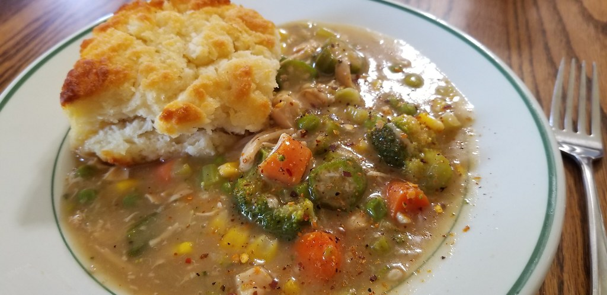

Chicken Stew Recipe

Step aside, chicken noodle soup. If you’re looking for a hearty, healthy dinner, you’ve come to the right place! Not only is this one-pot meal easy to prepare, it also tastes like it’s been
simmering on the stove for hours… even though it only takes 45 minutes from start to finish. Cooking the chicken in the stew means that it releases all its juices into the broth as it cooks,
giving the stew a ton of extra flavor. After that, all you need is a piece of homemade bread for dipping!
Ingredients:
- 4 tbsp. butter
- 2 large carrots, peeled and sliced
- 1 stalk celery, chopped
- 3 cloved garlic, minced
- 1/2 medium onion, diced
- 2 tbsp. all-purpose flour
- 1-1/2 lb. chicken breast, cubed
- 3/4 lb. baby potatoes
- 3 cups chicken broth
- 1 tbsp. onion powder
- 1 tbsp. garlic powder
- Salt and ground black pepper to taste
Steps:
- Add 2 tbsp. butter and chicken to pan over medium heat
- Season with onion powder, garlic powder, pinch of both salt and pepper
- Cook until no pink visible, stirring often ~5 minutes
- Remove chicken and set aside for later
- Combine remaining butter, carrots, celery, and onion in large pot
- Season with salt and pepper, sauté over medium heat ~5 minutes
- Add garlic, continue to sauté ~1 minute
- Add flour and stir until vegetables are coated
- Add chicken, potatoes, broth, salt and pepper to taste
- Bring to simmer, cook until potatoes tender ~15 minutes
- Enjoy!
Nutrition:
| Calories |
Fat |
Carbs |
Protein |
| 1536 |
48g |
84g |
180g |
Home